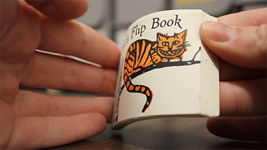

Animation Basics
Using the HTML5 Canvas
Presented by Billy Lamberta
What is Animation?

The Horse in Motion. Eadweard Muybridge, 1878
What is Animation?

Hand-drawn Animation
- Frame
- Sequence
- Speed

Alice’s Flip Book. Swamp Press, 1981
Computer Animation
Simple render loop:
FPS = 24
MS_PER_FRAME = 1000/FPS
while (true) {
clear()
update()
draw()
sleep(MS_PER_FRAME)
}In JavaScript:
var FPS = 24;
var MS_PER_FRAME = 1000/FPS; //41.667
function drawFrame () {
clear();
update();
draw();
}
setInterval(drawFrame, MS_PER_FRAME);Canvas Animation
Smooth loops with requestAnimationFrame
var canvas = document.getElementById('myCanvas');
var ctx = canvas.getContext('2d');
var SCREEN_WIDTH = canvas.width;
var SCREEN_HEIGHT = canvas.height;
function drawFrame () {
window.requestAnimationFrame(drawFrame);
ctx.clearRect(0, 0, SCREEN_WIDTH, SCREEN_HEIGHT);
update();
draw();
}
drawFrame();Canvas 2D Coordinate System

Transforms
translate, rotate, scale
Transforms
Affects everything drawn after
ctx.translate(dx, dy);
ctx.rotate(rx, ry);
ctx.scale(sx, sy):
Keep track of your transform stack
ctx.save();
...
ctx.restore();
Drawing in a Loop
//normal setup...
var canvas = document.getElementById('myCanvas');
var ctx = canvas.getContext('2d');
var SCREEN_WIDTH = canvas.width;
var SCREEN_HEIGHT = canvas.height;
//demo-specific variables...
var colors = ['#f00','#0f0','#00f','#ff0','#0ff','#f0f'];
var a = 0;
var n = SCREEN_HEIGHT/5;
//setup and run the rander loop ...
(function drawFrame () {
window.requestAnimationFrame(drawFrame);
ctx.clearRect(0, 0, SCREEN_WIDTH, SCREEN_HEIGHT);
for (var i = 0; i < n; i++) {
//update
var t = (i * 5), r = (a + i * 0.1), s = (Math.sin(a) * 10);
//update
ctx.save();
ctx.translate(t, t);
ctx.rotate(r);
ctx.scale(s, s);
//draw
ctx.fillStyle = colors[i % 6];
ctx.fillRect(0, 0, 100, 100);
ctx.restore();
}
a += 0.02;
}());Drawing in a Loop
[new tab]
A Ball Class
function Ball () {
this.x = 0;
this.y = 0;
this.rotation = 0;
this.scaleX = 1;
this.scaleY = 1;
this.radius = 40;
}
Ball.prototype.draw = function (ctx) {
ctx.save();
ctx.translate(this.x, this.y);
ctx.rotate(this.rotation);
ctx.scale(this.scaleX, this.scaleY);
ctx.fillStyle = "#f00";
ctx.beginPath();
ctx.arc(0, 0, this.radius, 0, (Math.PI*2), true);
ctx.closePath();
ctx.fill();
ctx.stroke();
ctx.restore();
}; <script src="Ball.js"></script>
Trigonometry Tools
Degrees and Radians
radians = degrees * (Math.PI / 180)
degrees = radians * (180 / Math.PI)
Surfing the Sine Wave

var angle = 0;
var range = 150;
var speed = 0.1;
var ball = new Ball();
ball.x = -ball.radius;
ball.y = SCREEN_HEIGHT/2;
(function drawFrame () {
window.requestAnimationFrame(drawFrame);
ctx.clearRect(0, 0, SCREEN_WIDTH, SCREEN_HEIGHT);
if (ball.x > SCREEN_WIDTH+ball.radius) { ball.x = -ball.radius };
ball.x += 2;
ball.y = Math.sin(angle) * range + SCREEN_HEIGHT/2;
angle += speed;
ball.draw(ctx);
}());
Surfing the Sine Wave
[new tab]
Circle the Cosine
var angle = 0;
var radius = 150; //range
var speed = 0.05;
var ball = new Ball();
(function drawFrame () {
window.requestAnimationFrame(drawFrame);
ctx.clearRect(0, 0, SCREEN_WIDTH, SCREEN_HEIGHT);
ball.x = Math.cos(angle) * radius + SCREEN_WIDTH/2;
ball.y = Math.sin(angle) * radius + SCREEN_HEIGHT/2;
angle += speed;
ball.draw(ctx);
}());Circle the Cosine
[new tab]
Calculating Distance
(with the Pythagorean theorem)
dx = pt1.x - pt2.x
dy = pt1.y - pt2.y
dist = Math.sqrt(dx*dx + dy*dy)
Applying Force in the Render Loop
- Velocity
- Acceleration
- Gravity
Not just a good idea—It’s the Law.
Velocity
The speed of something in a given direction.
var ball = new Ball();
ball.x = -ball.radius;
ball.y = SCREEN_HEIGHT/2;
var vx = 1;
(function drawFrame () {
window.requestAnimationFrame(drawFrame);
ctx.clearRect(0, 0, SCREEN_WIDTH, SCREEN_HEIGHT);
if (ball.x > SCREEN_WIDTH+ball.radius) { ball.x = -ball.radius };
ball.x += vx;
ball.draw(ctx);
}());[new tab]
Applying Velocity to Rotation
(Or any property, really.)
var arrow = new Arrow();
arrow.x = SCREEN_WIDTH/2;
arrow.y = SCREEN_HEIGHT/2;
var vr = 2; //in degrees
(function drawFrame () {
window.requestAnimationFrame(drawFrame);
ctx.clearRect(0, 0, SCREEN_WIDTH, SCREEN_HEIGHT);
arrow.rotation += vr * Math.PI/180; //to radians
arrow.draw(ctx);
}());[new tab]
Acceleration
Increase in the rate or speed of something.
var ball = new Ball();
ball.x = ball.radius;
ball.y = SCREEN_HEIGHT/2;
var vx = 0;
var ax = 0.5;
(function drawFrame () {
window.requestAnimationFrame(drawFrame);
ctx.clearRect(0, 0, SCREEN_WIDTH, SCREEN_HEIGHT);
if (ball.x > SCREEN_WIDTH+ball.radius) { ball.x = ball.radius; vx = 0; };
vx += ax;
ball.x += vx;
ball.draw(ctx);
}());[new tab]
Gravity
Is just acceleration applied to the y-position.
(Apologies to Newton and Einstein.)
[new tab]
Easing
(The fancy term is non-linear interpolation.)
Easing
Closing in on the target.
var ball = new Ball();
var targetX = SCREEN_WIDTH - ball.radius;
var targetY = SCREEN_HEIGHT - ball.radius;
var easing = 0.05;
(function drawFrame () {
window.requestAnimationFrame(drawFrame);
ctx.clearRect(0, 0, SCREEN_WIDTH, SCREEN_HEIGHT);
var vx = (targetX - ball.x) * easing;
var vy = (targetY - ball.y) * easing;
ball.x += vx;
ball.y += vy;
ball.draw(ctx);
}());[new tab]
Easing
Know when to say when.
var targetX = SCREEN_WIDTH - ball.radius;
var targetY = SCREEN_HEIGHT - ball.radius;
var easing = 0.05;
var easeComplete = false;
(function drawFrame () {
window.requestAnimationFrame(drawFrame);
ctx.clearRect(0, 0, SCREEN_WIDTH, SCREEN_HEIGHT);
var dx = targetX - ball.x;
var dy = targetY - ball.y;
if (!easeComplete && Math.abs(dx) < 1 && Math.abs(dy) < 1) {
ball.x = targetX;
ball.y = targetY;
easeComplete = true;
} else if (!easeComplete) {
var vx = dx * easing;
var vy = dy * easing;
ball.x += vx;
ball.y += vy;
}
ball.draw(ctx);
}());[new tab]
Sprite Sheets
Sprite Sheets
Sprite Sheets
All this, and much more!
The codez for all these demos are available online:
Taken from my book, HTML5 Animation with JavaScript: